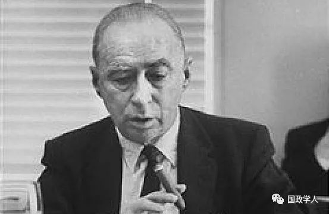
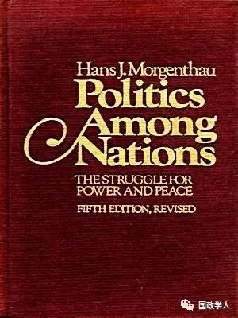
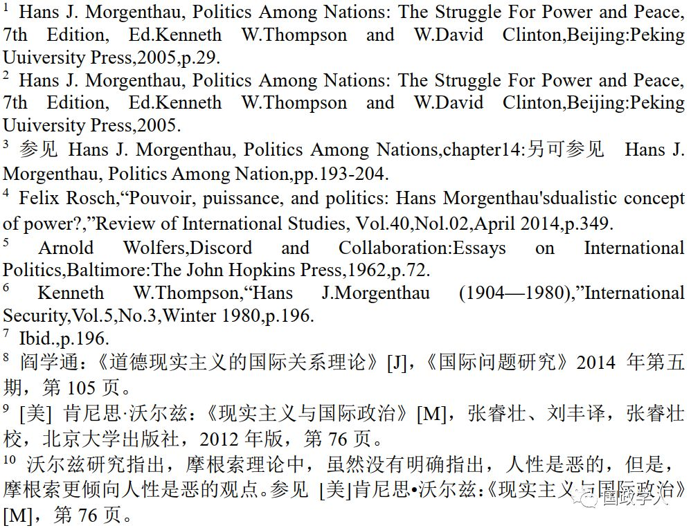
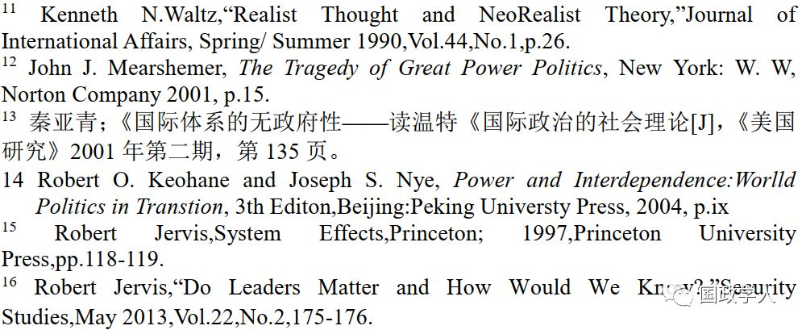
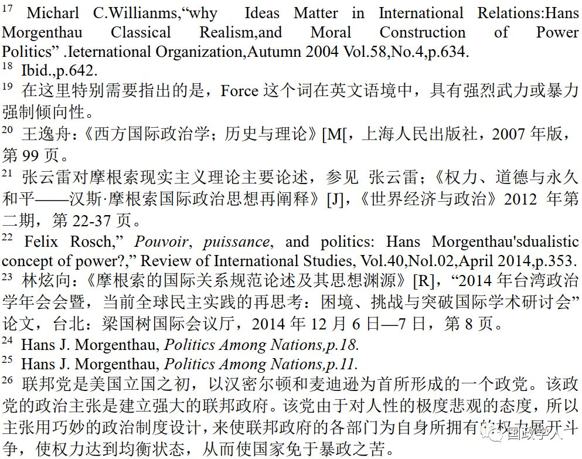
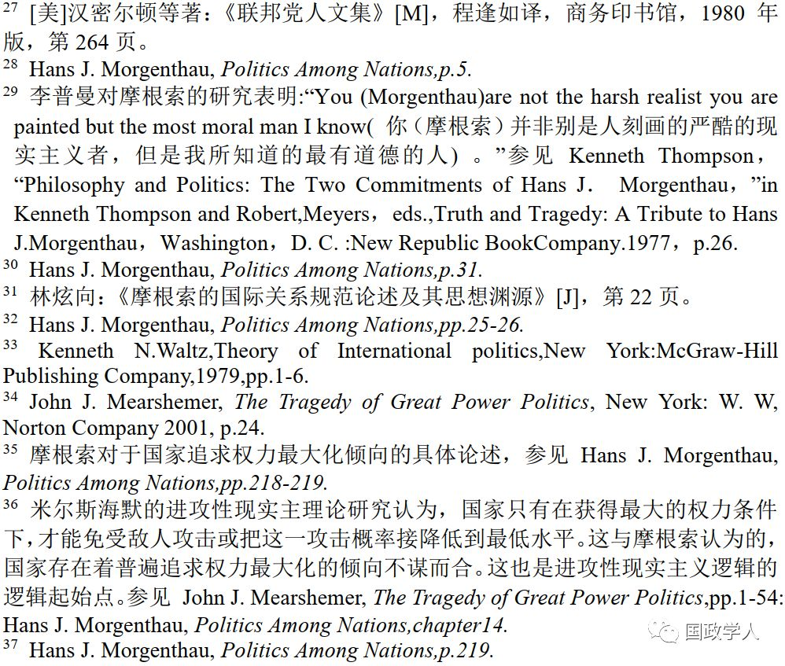
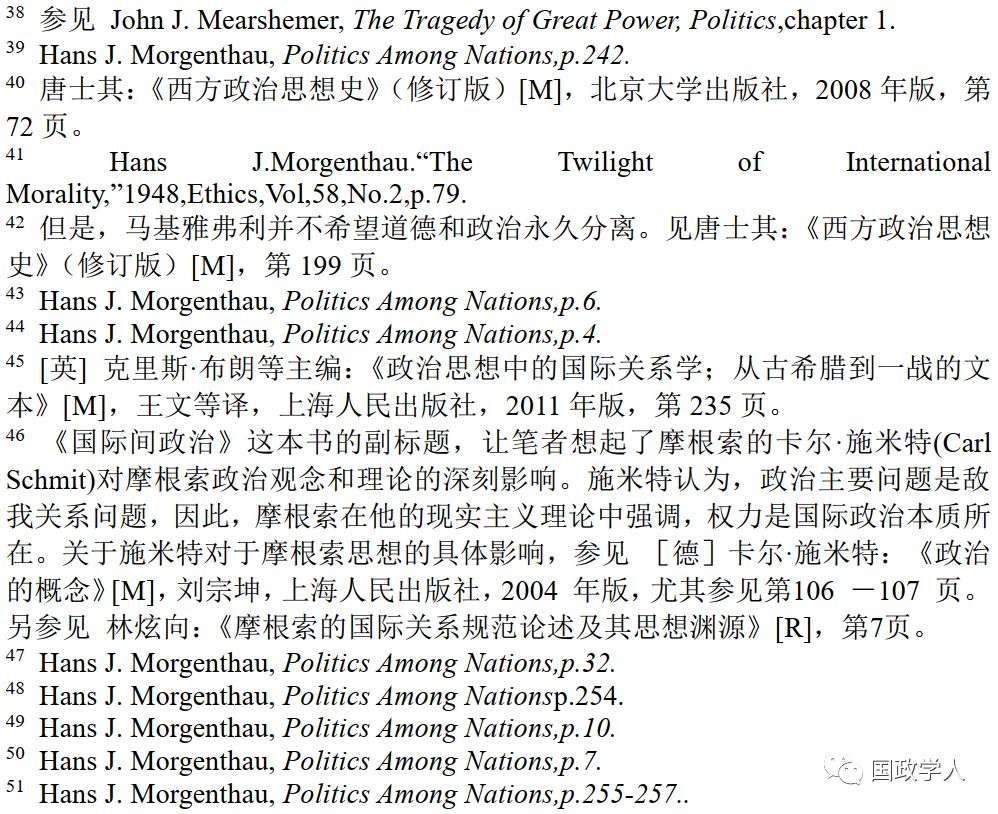
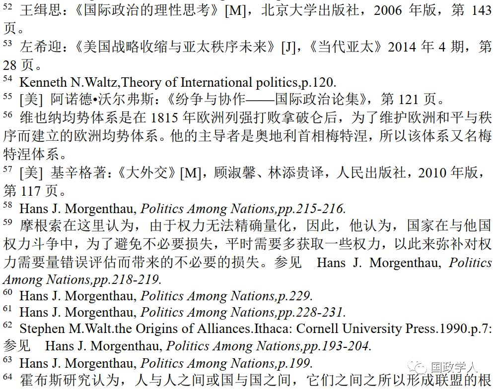
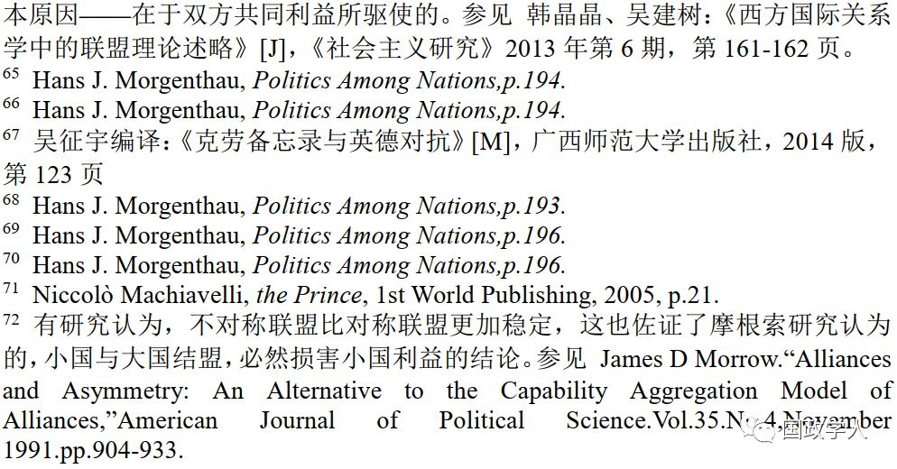

收录于合集

简 介
【作者】 吴建树 ，男，1982年，察哈尔学会助理研究员，主要研究方向是地缘政治学、现实主义理论研究。(江苏 南京 210048，电子邮箱，hongshu7@sina.com）。
** 【来源】** 国政学人原创稿件，由本平台编辑首发
** 【引用】** 吴建树. 权力、道德、均势、联盟与摩根索——汉斯·摩根索的经典现实主义思想再解读.国政学人微信公众平台[EB/OL], 2019-06-19.
编者按
作者在十二年前读到那本摩根索的巨著《国家间政治》，这本书给他留下深刻的印象。这十二年以来，作者一直在思考摩根索的国际关系理论的核心思想到底是什么？于是便开始对摩根索的著述进行了初步研究，本文是对他的国际政治理论的一些思考。当然由于受到种种原因的限制，作者无法对他的所有著述进行系统性地研究，因此，本文只是初步探讨了摩根索对联盟和均势相关性的研究和论述，还存在更多深入研究的空间。
作为脑瘫患者，作者对国际关系有着极高的热情和兴趣，凭借坚毅不拔的品质坚持学术研究，实现了从一名国关爱好者到一名专业学者的蜕变。近年来，他通过邮件、网络学习等方式跟随国内有关名校的老师修习国际关系课程，广泛阅读相关论著，勤于思考，勇于练笔，乐于交流，不断进步，取得了丰硕的学术成果。本文在编辑过程中仅对字词和格式规范等技术性问题进行了处理，最大程度尊重了作者原意。作者也希望借此机会能与更多的朋友进一步探讨。
内容提要
摩根索的经典现实主义理论，作为国际关系理论中经久不衰的经典研究议题，并且，对其中关于权力政治与思想给予充分的研究和讨论。同时，摩根索也指出，权力、道德、均势与联盟存在一种互动关系，这种互动关系在摩根索的经典现实主义理论研究中始终占据重要位置。但在国际关系理论研究领域中，对这一互动关系理论研究并未得到相应的重视和讨论。因此，对这种互动关系研究和诠释，对现实主义理论拓展研究议题，增加新的知识增量，是必不可少的研究。
关键词： 经典现实主义；权力；联盟；道德；均势
正 文
在国际关系理论研究领域，经典（摩根索）现实主义是重要研究议程之一。摩根索（Hans J.Morgenthau）现实主义理论关于国际政治经典论述认为，国际政治的实质是权力争斗[1]。目前，国际关系学界在权力政治是摩根索现实主义理论的核心这一方面已有共识，但是有关对摩根索现实主义理论经典著作《国家间政治》[2]中大量篇幅来阐述，道德、均势、联盟政治等因素对国际政治影响[3]问题的考察，尚未形成系统而成熟的研究。学术界对这一问题之所以缺乏相应重视，部分原因在于不少学者认为摩根索现实主义理论就是权力政治理论，例如，有研究指出，摩根索现实主义的权力观念是国际关系学者中被广泛讨论的议题[4]。事实上，摩根索理论中的道德、均势、联盟与权力并非互为对立面，而是有着一种相辅相成的关系。因此，研究摩根索现实主义理论中的这些因素及其背后内在相关性的逻辑关系，对于我们深入理解摩根索现实主义理论，并在此基础上扩展现实主义理论的研究具有重大的学理意义。
**鉴于国际关系学界有关摩根索现实主义理论中关于权力与道德、联盟、均势之间在整体上的互动关系研究尚不充分，本文试图使用规范研究的方法分析这些因素之间的互动关系对摩根索现实主义理论倾向的影响，从而发掘摩根索现实主义理论中被研究者遗忘的摩根索现实主义的思想。结构安排如下；第二部分，主要是研究和探讨摩根索政治理想和政治道德观念；第三部分，集中探讨和研究摩根索对均势和联盟等问题的研究。第四部分则是对本文概括性总结。 **

摩根索（Hans J.Morgenthau）
1
** ** 现有文献考察
国际关系学者对摩根索的现实主义理论重视和研究始于沃尔弗斯(Arnold Worfers)的零散论述。沃尔弗斯认为，汉斯·摩根索着重强调，在国际关系中，权力是国家外交政策追求最首要和直接目标[5]。在沃尔弗斯看来，摩根索现实主义理论中，把国家追求权力是国际政治中的放在第一位，因为，国家要实现国际政治目标，都有通过权力来实现。
在沃尔弗斯研究的基础之上，有两位学者对这一议程做了进一步拓展。汤普森（Kenneth W,Thompson）沿着的思路，进行了进一步研究。汤普森研究指出，摩根索认为，权力争斗是国际政治中的永久因素[6]。同时，汤普森研究也认为，摩根索从不认为，在政治行动中道德的议题是荒谬的[7]。阎学通在研究道义现实主义时指出，摩根索未曾否认道义在国际政治中所起之作用，而是论证以民族道义取代国际道义是错误的，甚至是有害的[8]。从阎学通的论述来看，他是基本认同汤普森的观点，但他的研究更加明确指出了，摩根索从来没有否认或贬低道德在国际政治中所发挥的作用。
此外，还有一些国际关系研究的学者，基于他们自己对摩根索的研究和理解，对这一议程进行了更进一步拓展。沃尔兹（Kenneth N.Waltz）在对现实主义(经典现实主义)和新现实主义做比较研究时指出，摩根索认为，在对稀缺物品进行竞争而又没有仲裁者的情况下，在竞争者中自然会爆发权力斗争，因此完全不必求诸人类与生俱来的邪恶就能解释权力斗争[9]。在沃尔兹看来，摩根索的现实主义理论中，关于国际政治是权力斗争的解释，其核心在于国际政治中权力资源的稀缺权力性。同时，国际政治体系中又缺乏一个最高仲裁者来公平分配这种稀缺性的资源，而导致国家在国际政治体系中，为权力而无休止的争夺[10]。此外，沃尔兹研究还指出，摩根索现实主义理论中，存在着严重自我矛盾性，他（摩根索）既相信国际政治理论可以发展出来。同时，他又怀疑这种理论发展的前景。而且。摩根索还混淆了外交政策问题的解释和国际政治理论构建的问题[11]。
米尔斯海默 (JohnJ.Meaishermer) 研究指出，摩根索现实主义理论认为，国家间是为获得权力而斗争，因为它们天生就有对权力的渴望[12]。在米尔斯海默看来，摩根索认为，人性和权力斗争存在着某种必然联系，而这种联系导致国家间对权力无休止斗争。秦亚青的研究也与米尔斯海默的研究有类似的观点。秦亚青指出，经典现实主义(摩根索现实主义理论)认为国际关系的实质是为权力的争斗，其动力来自人的本性，摩根索的现实主义六原则充分反映了这种以人性为国际关系第一推动的观点[13]。在秦亚青看来，摩根索理论核心，就是权力争斗和人性中对权力无限制的欲望，而决定了国家的行为。秦亚青的研究是基本认同沃尔兹和米尔斯海默对摩根索现实主义理论的看法，但是，他的研究明确指出，摩根索现实主义理论中人性是恶的，而导致国家间无休止权力斗争。
约瑟夫·奈(Joseph S．Nye)和罗伯特·基欧汉（Robert O.Keohane）的共同研究指出。摩根索在二十世纪七十年代，他(摩根索)也逐渐认识到经济实力和军事力量构成了权力基本要素[14]。在奈和基欧汉看来，摩根索在二十世纪七十年代的时候面对全球化的浪潮时，使摩根索逐渐认识到，权力并不是国家在国际政治中的唯一议程，而经济因素对国际政治影响力在逐渐上升。
罗伯特·杰维斯(Robert Jervis)y研究指出，摩根索认为，国家的行为必须受到国家利益的支配[15]。此外，杰维斯研究还指出，摩根索认为，人对自己能力高估，而使人对权力和野心无节制膨胀。因此，摩根索非常担心这一点[16]。在杰维斯看来，摩根索现实主义理论认为，权力和利益乃是国家行为的唯一驱动力。同时，摩根索现实主义理论中，国家在追逐权力和利益的目标，自我节制的问题。
迈克尔（Micharl C.Willianms）从研究经典（摩根索）现实主义与道德之间互动对权力政治构建，来对摩根索现实主义理论和思想进行解读。他认为，如果把摩根索的现实主义，简单理解为权力政治是错误的[17]。同时，迈克尔研究指出，摩根索现实主义理论是由新教伦理、道德、资本主义经济逻辑、韦伯（Max Weber）经典分析方法等诸多要素构建起来的[18]。在迈克尔看来，摩根索现实主义理论是深刻而又复杂，不能把他的理论简单理解为权力政治理论。
另外，王逸舟在对理想主义和现实主义(经典现实主义)做比较研究时指出，摩根索认为，“权力”（Power)和“力量”（Force）[19]的概念是不同的。运用权力不等于使用武力，甚至不等于使用具体的物质力量。“当我们（摩根索）说到权力时，它意味着一个人对他人的想法和行为的控制；所谓政治权力，是指公共权威的持有者（如国家、政府、集团等）之间的控制性角色，讲的是公共权威与一般大众之间的关系[20]”。在王逸舟研究看来，摩根索理论中权力与武力区分开来，而把权力看作是一种无形控制力。
近年来国内外有五位新生代的学者，他们试图通过政治道德、政治哲学、西方政治思想史、摩根索早期文献对摩根索现实主义理论和思想进行全新阐述，使这一议程内容更加丰富。刘丰和左希迎研究指出，摩根索等古典现实主义学者更是直言不讳地指出,审慎就是国际政治的道德核心。在这两位学者看来，摩根索现实主义理论认为，在国家间进行权力斗争时，只有审慎去做，才是符合国际道德标准。同时，也可以避免国家间权力盲目争夺。张云雷对摩根索研究是从政治哲学、西方政治思想史、政治道德、摩根索原著(国家间著作)等角度出发，对摩根索现实主义理论和思想，做了较为系统性研究。基于此，张云雷提出新的四个观点，一是摩根索现实主义理论和思想，要告诉我们，理解国际政治运行的规律，在于发现那些决定国际政治走向，那些相似社会力量，并且去理解这些社会力量运行规律。二是国际政治研究，最本质的东西人性。人性并非是恶的，人性是复杂的。三是外交是国家权力组成最重要的一部分，它是整合国家其他权力要素，把这些权力要素塑造一个权力整体，并赋予方向或目标。四是六原则不是摩根索理论核心思想，而是对他的思想一种必要补充和诠释[21]。在张云雷看来，过去中国国际关系学术界，对于摩根索现实主义理论研究，只是在停留在局部和标签式研究上，因此，在研究中未能很好把握摩根索现实主义理论整体性。使得这些研究对摩根索理论认识，缺乏整体性理解和诠释。
罗施（Felix Rosch）研究认为，摩根索现实主义理论中权力的理念，是受到人性中自私的欲望所驱使，这与传统霍布斯主义人性是一脉相承的[22]。在罗施看来，摩根索现实主义理论在有意或无意中，继承了霍布斯主义的传统，即人性中追逐权力的欲望而导致权力斗争。因此，摩根索理论人们批评为不公正的理论。在罗施看来，摩根索现实主义与西方传统现实主义理论是一脉相承。摩根索现实主义对人性（人的权力欲）做了更进一步验证，使得摩根索的现实主义理论变得更加复杂和完善。
林炫向对摩根索早期文献进行研究时指出，早期的摩根索曽说；万有引力的自然法则，不管人们愿意与否。相反地，诸如法律、伦理或道德等规范的有效性无可避免地欲是与人类的存在密不可分。因为人的意志—规范意志（Normative Will）—决定著这些规范内容产生[23]。在林炫向看来，摩根索现实主义理论中，道德与政治是并列，因此，按照这一逻辑，摩根索认为，道德对国家获取权力具有目的和手段上的限制。换言之，林炫向研究认为，在摩根索理论中，道德因素对权力斗争有很大限制作用。林炫向甚至认为，摩根索理论中的，争的核心概念，只不过是摩根索为了实现道德目标一种尝试或手段。
综上所述，对权力作为组成摩根索经典现实主义理论的核心要素，乃是国际关系学界的一致共识。不过这些研究较多的是对摩根索理论内核中的权力的研究和阐述。但是，对于权力、道德、均势、联盟在摩根索现实主义理论中的互动关系研究，较少提及或没有提及。因此，这就为本文的研究提供了探索的可能。

2
** ** 摩根索的现实与理想
（一）人性与权力、政治道德
摩根索现实主义理论是建立在以人性和权力为基础之上。在摩根索看来，要理解国际政治本质，就要理解人性。因为，人性是国际政治现在与过去联系唯一不变基础[24]。摩根索认为，人性中与生俱来对于权力和利益渴求，导致国际政治中权力争斗成为永久性因素。利益驱使决定了人的行动轨迹[25]。摩根索对人性持有这种悲观态度和“联邦党”人[26]的政治理论主张有着相似观点，是以野心来制衡野心[27]。对人性持悲观的态度使摩根索强调以权力来界定利益，并作为他的国际政治理论的基础。摩根索这样解释自己的理论，以权力明确利益的概念为研究者规定知识规范，为政治学的研究主题加入理性秩序，就此使政治的理论理解成为可能[28]。政治的实质是权力，而政治的意义在于规范权力的使用，使权力不被滥用，或者说，对武力和权力加以区分，进而使权力的基础不被武力所毁掉[29]。摩根索这样论述这个问题：“如果暴力在战争中成为事实，那就表示政治权力便被军事实力所取代。实际运用暴力意味着两个人之间的心理上联系为他们彼此间的身体接触所取代；前者是政治权力的实质所在，而后者实际身体接触则取决于强大的力量举动。恰恰是因为这个原因，一旦诉诸暴力，政治关系组成中的心理因素便不复存在了”[30]。有研究甚至指出，当时代贬低权力的因素时，就必须强调它的重要性。当时代倾向于在事务的一般架构下一元化权力概念时，就必须要展示它(权力)的限制。当时代主要以军事力量来界定权力时，就必须提醒提醒注意权力方程中还有其他因素，特别是心理微妙关系，因为后者形塑了权力网[31]。
摩根索研究认为，“在整个世界里仍是主权独立国家对权力的追求作为动机，和平可以由两种策略来维护。一种是社会力量的自我调整的机制，它表征为国际场合上的权力斗争，即均势。另一种是以国际法、国际道德和世界公共舆论的形式对权力斗争加以规范性的限制”[32]。摩根索的研究是通过把国际政治权力斗争纳入到政治道德规范中去，降低了国际政治与生俱来的暴烈性。因此，摩根索的国际政治理论达到的思想高度是，前无古人，后无来者的。他既没有像卡尔(Edward H.Carrr)一样，纠结于道德和权力之间不能平衡，不能自拔；也不像摩根索之后的沃尔兹（Kenneth N.Waltz）和米尔斯海默(JohnJ.Mearshemer)一样，现实主义理论物质化的思想倾向。沃尔兹研究认为，规律是由一定概率所反复出现的客观现象，而理论只是解释规律的[33]。米尔斯海默研究则认为，“现实主义倾向不去区分国家好与坏，而代以国家之间相对权力的大小为基础来分辨”[34]。此外，本文研究表明，摩根索研究所认为的，国家追求权力最大化的普遍倾向[35]，也正是米尔斯海默进攻性现实主义理论的初始点[36]。不过在这里特别需要指出的是，摩根索研究指出的是，国家普遍存在着追求权力最大化的倾向，是一种避免由于权力评估失误所带来的损失防御性举动，是不以谋求霸权和牺牲其他国家权力为目标的[37]。而米尔斯海默进攻性现实主义理论则把国家追求权力的最大化看作是一种谋求霸权和削弱其他国家权力，进而达到使该国（霸权国）达到最大生存几率的目的[38]。
从前面沃尔兹和米尔斯海默对现实主义的论述中，可以看出，他们与摩根索在思想境界上的高下之分。米尔斯海默这样的论述反映了他们现实主义的理论的绝对物质化的倾向。摩根索现实主义理论也有物质化的一面，但他的理论也有非物质的一面，摩根索研究认为，道德和意识形态层面对物质权力的限制与操控所带来的影响是决定性。例如，摩根索研究指出：道德限制的存在及其有效性，明显表现在对美国中央情报局所密谋的暗杀阴谋的反映上。美国主流公共舆论所反对的不是这些少数企图没有成功，而它们违反了道德限制[39]。也就是说，道德虽然在国际政治中只起着辅助性的作用，但道德也能有限度地限制和规范国与国之间的权力争斗。因此，在摩根索内心深处存在着一种亚里士多德的政治思想倾向，即亚里士多德所认为的道德或伦理学只是政治学的一个部分，是政治学的起点[40]。同时，摩根索指出，在讨论国际政治问题应该避免极端的倾向，一个是高估伦理道德对国际政治的影响，另一个是避免权力极端物质化倾向对国际政治所带来不利的影响[41]。这一点体现出摩根索的现实主义理论对人类有一种终极关怀的精神，体现了自马基雅弗利以来现实主义思想的传统，即只是在必要的时候，政治和道德是分离的[42]。另一方面，摩根索现实主义理论的经验性特征也是非常明显的。他这样论述道，真实是建立在客观和理性基础上的，以事实为证据的，由推理来阐明的[43]。摩根索认为，一切新的国际政治理论和一切国家外交政策的好与坏，只能通过实验来验证。在摩根索的政治世界里，经典现实主义理论的价值取向性，就是最终把国际政治带回到古希腊政治“善”与“正义”的发展轨道上去。摩根索研究认为，良好的动机保证反对蓄意制定坏政策[44]，他希望通过道德限制来不断完善权力使用规范，使国际政治变得更加温和。这就是摩根索现实主义理论的政治道德所在。而实际上，摩根索这种现实主义的道德观，很大程度上是受到荷兰法学家，雨果·格劳秀斯（Hugo Grotius）的影响，格劳秀斯研究认为，一国不为了自己的利益而忽视各国共同的法律也是明智的[45]。摩根索的现实主义道德观，就是在国与国之间在进行权力斗争时，尽量要避免，做那些与增加权力无关愚蠢的事情。例如在国与国之间在权力斗争中，如果能用和平手段来增加权力时，就绝不用武力来增加国家权力。即使在迫不得已的情况下，国家使用武力来增加自己的权力，也要不武力使用程度，降低到最低烈度。而避免给其他国家造成不必要的伤害。这与格劳秀斯的自然法思想是一脉相承的，即避免使用不必要的暴力。所以，摩根索的现实主义道德观，就是国家谨慎的使用权力。在摩根索看来，国家滥用自己的权力，就是一种罪行。
本文把摩根索的现实主义理论与政治道德取向总结为四点核心要素：
（1）经典（摩根索）现实主义理论认为，政治是植根于人性基础上的，而对人性的悲观态度迫使学者和国务家们必须要用人性中最悲观的一面，也就是汉密尔顿在《联邦党人文集》中所说的，野心只能用野心去制衡。
（2）国际政治的普遍特征是权力斗争，因为权力直接关系到生死存亡，以及国家战略目标的实现。所以，国际政治的权力斗争是国际关系亘古不变的铁律。
（3）摩根索试图把国际政治纳入政治规范之中，以此来减少国家之间在争夺权力过程中使用武力的可能性，进而用政治道德来规范权力使用和争夺，从而达到摩根索所著的《国家间政治》副标题——“争强权[46]、求和平(TheStruggle for Power and Peace)”的目的。
（4）摩根索认为，诚然在国际政治中，以权力来界定利益是普遍适用的。同时，他也指出，具有道德或法律权威的权力必须区别于不道德的权力[47]，得到道德或法律认可的权力，比赤裸裸野蛮的权力更有力量。
简言之，摩根索的国际政治现实主义理论和道德观里，强调一种对权力的双重约束，既用权力来制衡权力，又用道德和法律以及正义等手段来约束人性中对权力的贪欲的一面。摩根索想通过这样双重制衡的方法，来达到国家间维持长期和平的目的。这也反应摩根索对国际政治非常清晰和现实认识，即国际政治必须通过权力斗争才能达到其目标。
（二）理想与精英外交
在摩根索看来，他心目中的理想外交，不仅可以避免战争，而且还可以使世界走向地球合众国。这种外交的实质就是精英外交。摩根索在自己的著述里毫不掩饰自己对欧洲历史上“贵族外交”时代的怀念，他在《国家间政治》中举了很多案例来说明他对17、18世纪贵族（精英外交）外交的向往。他感慨地说道，欧洲贵族社会所遵守的道德行为标准必然具有超国家的特征，它们不仅用于全部普鲁士人或全部奥地利人或全部法兰西人的，而是用于所有凭借着他们的出身和所受教育能够领会并按照这些标准行事的人们[48]。这就是说在意识形态接近的人群间或国家间，发生冲突的概率可能会小一些。但是，摩根索也并不认为在国家间意识形态相同的状态下就不会发生冲突。相反，摩根索研究认为，“无论国家之间还是私人之间，利益的同质性是最确定的纽带”[49]。
摩根索怀念贵族外交是因为那时国与国之间彼此所采取的外交政策是审慎的，同时，也是对他生活的那个时代的美国外交政策制定过程中，所缺乏的理性精神而非常感到不满的焦虑。在摩根索看来，当美国人思考对外交政策方面发展进行反思时，一个令人惊讶地发现，各种错误的看法有着持久的生命力，它们以各种伪装逃避了理性争论和政治实践[50]。换言之，在摩根索看来，外交决策者绝不应该，也没有必要屈从于民众的压力去制定那些不符合现实的外交政策，后者给国家和民众带来不必要的灾难，哪怕是对于美国那样的国家。在摩根索内心深处，他认为贵族出身的外交官和国务家，由于他们受过良好教育和他们之间所共有的价值观念，使他们在处理外交事务中比一般平民出身的外交官和国务家更为理性。摩根索研究指出，贵族外交，它的主要运行机制是，贵族出身的外交官对其某一个人效忠，他们的普遍任期非常长，因而，他们容易形成共同道德规范和行为准则。而在现代民主政治制度下，是多数人意志的政治，而那些外交官也要服从于多数人的意志。这多数人的意志是极不稳定和时刻变化的，所以在现代民主政治制度下，各国外交官也不可能长期任职，这非常不利于他们形成一套道德规范和行为准则，来约束他们在外交政策制定和执行过程中的行为[51]。王缉思研究指出，现实主义者们认为外交权应高度集中，决策者有权以秘密外交的方式纵横捭阖，求得国际冲突的和平解决。在此过程中，应尽量排除国会与公众舆论的干扰[52]。精明的政治家引导民众，而非民众推动政治家[53]。这也是摩根索一生所提倡着，在制定和执行外交政策过程中，国务家和外交家一定要抱着审慎和理性的态度去做。
**3
** ** ******均势与联盟
（一）均势与道德共识
沃尔兹概括摩根索的均势观时认为，均势是对应国家某一具体事务的政策目标[54]。摩根索认为，均势的存在是各国为维护自己的既得利益而维持现状的一项外交政策，是一些国家为了保住自己的既得利益，而防止那些谋求改变现状的国家夺取它们的既得利益而采取的外交政策和军事战略而已。沃尔弗斯（Arnold Wolfers）研究指出，均衡倾向于阻止通过暴力来实现变革，而暴力通常又是实现重大变革的唯一手段[55]。因此，摩根索研究认为，均势很难说是给世界带来和平，还是更多的战争。比较长周期的和平不是均势本身可以做到的，而是受当时的时代背景和其他一些因素共同作用的结果。而且，摩根索认为均势是不可能长期存在的，因为国家间的实力不可能像增加或减少天平的砝码一样来保持平衡。基辛格在讨论维也纳均势体系时有这样一段描述：梅特涅体系[56]反映着十八世纪的宇宙观，认为宇宙有如一座庞大的时钟，其内部的每一个齿轮均复杂而紧密地咬合着，只要有一个环节出了问题，其他部分的互动就会受影响[57]。此外，摩根索研究认：为国与国之间的均势绝对不可能长期维持稳定，因为国家权力是不可能完全量化的，而且国家的外交政策与军事战略制定和实施也不可能完全理性化。
摩根索写道：在18世纪有一位均势反对者试图证明在那个时代权力估算方式的荒谬，由此他问道有两位君主是谁更有权力，一位君主有三磅军事力量，四磅政治家的才能，五磅热情和两磅理想；另外一位君主有十二磅军事力量，但其他素质只各有一磅，这两位君主中谁的权力更大？作者倾向于前一位君主[58]。摩根索在这里想说的是，国家之间的均势是很难长期维持稳定的。因为很显然地，若想维持国家之间的均势状态，就要像保持天平的平衡一样，而那是机械式的，更主要的是它的砝码是可以量化的。换言之，人们通过精确的加减天平两端重量来维持天平的平衡，但任何国家都无法肯定它在每一个历史时期中对权力分配的评估都是正确的。在国家权力不可能准确评估的情况下，国家为了避免权力估算出现错误给自己带来不必要损失，就要在平时多谋取权力，以此来保障它在权力失误下依然拥有很高的安全系数[59]。按照这种逻辑推理下去，摩根索自然会认为，机械式的均势是不可长期维持的，因为国际体系中的无政府状态和国家意图的难以预测，使得只有自身的权力增长才能保障国家的安全。因此，摩根索研究指出：若想持久维持均势光靠机械式的权力均衡是不够的，也是根本做不到的。必须要用国家所形成的道德共识来补足机械式的权力均衡。摩根索引用了英国历史学家爱德华·吉本（Edward Gibbon)的研究，来佐证了他的研究。吉本研究认为，均势能够维持是建立在西方文明（西欧文明）的道德和理智基础之上的[60]。换言之，摩根索研究认为，均势长期维持是建立在权力均衡和道德共识的基础，权力均衡和道德共识，这两者对于均势长期维持，有着决定性的影响。因此，摩根索认为；道德共识对于均势长期维持比权力均衡的影响更大。基于此，本文认为，摩根索认为的均势长期维持基础是国家之间，必须要有共同道德共识和共同历史的记忆，而不是靠权力均衡来维持的[61]。
简言之，如果把摩根索的均势观念归纳起来，可以得出如下三点结论：（1）仅仅单靠均势本身并不能给世界带来绝对和永久的和平。均势只是多极体系和某些国家既得利益的产物，而非维护世界和平与繁荣而产生的。所以，它没有天然的维护和平的特性。因而想利用单纯的均势来维护世界和平是不可能的。（2）权力是不断变化的，且对权力难以精确地量化，所以像那种机械天平式的均势不可能长久维持。实际上，纵观这三百年多年的国际关系史，我们就会发现，摩根索的这种质疑是非常符合逻辑的。从1689年由英国领导的反对路易十四法国的大同盟战争至1914年所爆发的第一次世界大战，这些战争的爆发不都是打着维护欧洲的均势而进行的吗？这到底是均势促战争，还是战争促均势呢？均势是在欧洲特定时空状态下形成的一种特殊产物，它对今天的国际关系并没有多少实际的参考意义。（3）均势长期的维持或均势能够维持和平不在于均势本身，而在于均势背后所支撑的道德共识和共同历史的记忆。
（二）均势与联盟
摩根索作为国际政治学经典现实主义大师，是把国际政治学作为独立学科研究的创始人。他也是第一位较为系统性阐述了联盟的成因、联盟中的国家利益分配以及联盟所存在的不同形式的学者。同时，摩根索指出，联盟与均势有着必不可分的联系。斯蒂芬·沃尔特（Stephen M.Walt）研究认为，联盟被摩根索认为是“均势在多极国家体系下所运行的必须功能”[62]。在摩根索看来，联盟形成的必要条件是多极化的国际体系。因为在这种国际体系下，当遇到体系中某一个实力相对较强的极（国家）试图改变现状时，在体系中实力稍弱两个极或多个实力较弱的极会结成一个维持现状的联盟，来反对体系中试图改变现状的相对较强的那个极。换言之，摩根索研究认为，联盟的主要功能是维持现状的。弗朗西斯一世与亨利八世以及与土耳其人缔结的同盟，是为了防止哈布斯堡王朝的查理五稳固和扩张其帝国的势力[63]。换言之，在摩根索看来，联盟是维持多极国际体系最重要外交工具之一。
首先，摩根索对联盟的起因和它的一般性质以及在联盟中的国家权力和利益的分配，都做了比较详细的阐述。摩根索和霍布斯[64]有着类似研究，联盟是国与国之间的共同利益的产物[65]。他研究认为，联盟的形成是国家间共同利益的典型标志，而限制联盟国家间形成或发展的因素，主要是受到地理区域的限制和目标[66]。英国外交家艾尔·克劳（Eyre Crowe）指出，这两个协约（1904英法协约和1907年英俄协约）解决了英国与法俄两国间此前在欧洲政治边缘事务上的争吵。要缔结任何此类安排，就必须找到彼此间的共同利益[67]。因此，根据盎格鲁·撒克逊民族国家的外交史经验，摩根索总结出国与国之间形成联盟的基本规律，只有在国与国之间存在着巨大的共同利益作为合作的基础上，国家之间的联盟，就可以永久存在下去。此外，在有共同利益的条件下，有相同意识形态的国家，更容易结成联盟。
其次，摩根索对联盟的一般性质也做了非常详细的研究和阐述。摩根索研究认为，国家之间之所以形成联盟，除了共同利益之外,国家间结成联盟也是为了增加自己的权力[68]，而使自己与强大的竞争对手展开权力斗争的时候，而不处于下风。还可以防止竞争对手，把其他国家拉入自己联盟，而不至于使自己与强大的对手展开权力斗争时，而增加新的困难和变。换言之，摩根索研究表明，联盟的一般性质主要是均势的产物，而非其他。因此，联盟是均势条件下的必然产物，所以在联盟的一般性质中，也有必不可少的维持均势性质成分在其中。简言之，在摩根索的国际政治理论语境中，联盟的一般性质就是权力斗争和维持均势，双重因素叠加就决定联盟的一般性质是维持现状。摩根索对联盟利益所分配的方式也进行了详细的研究。摩根索指出，在理想联盟状态中利益分配的状态应该是各成员完全互助的，这里(联联盟中)成员相互所履行的服务应当得到各自相应的利益。这联盟理想状态近乎于在联盟中的成员国权力平等，而且联盟中所服务各成员的利益一致。在此状态下，各成员国等量的资源与相等的动机是相称的，都为一个整体利益服务[69]。
再者，在国与国实力对称下，所结成的联盟可以平等的分配利益。而对于联盟中实力不对称的国家，摩根索研究认为，如果在这种旨在保护受益方的领土完整和政治统一的联盟目标下，那么联盟与保证性条约之间就难以区分。它们之间互补的利益最容易导致这种利益方式是不均匀地，因为互补利益本来就有实在差别的利益，各自利益的评估和比较很容易受到主观解释的歪曲，一方明显的权力优势必然会放大这种主观的偏差[70]。换言之，在摩根索看来，如果出现了不对称性联盟的话，那么在联盟中的实力较弱的一方，不仅得不到它在联盟中所应得的利益，而且连它自己国家主权都有可能受到损害。最后，摩根索借马基雅维利所的话“弱国除非在迫不得已不要与强国订立联盟”[71]，来警告那些弱小国家不要轻易与强大的国家结成联盟。因为，联盟中的权力分布直接决定了在联盟中的国家分配利益的多寡。换言之，大国与大国结成联盟，主要是为了抗击霸权或维持现状而结成的，例如，1893年的《俄法同盟条约》、1902的《英日同盟条约》等，都属于这一类型的联盟。还有一种联盟形式，就是大国与小国结成联盟。而这种联盟是往往出于大国控制小国的目的而结成的。例如，美日军事同盟和美韩军事同盟，都属于这种联盟类型[72]。简言之，摩根索认为，联盟是多极均势体系下的必然产物，同时也是大国获取更多权力的一种外交工具。
**4
** ** ******总 结
摩根索对于权力、道德、均势、联盟之间互动关系的研究，长期被国际关系学术界所忽视，本文对这一领域研究，有助于我们对更全面地理解摩根索现实主义理论。在充分考察现有研究的基础上，本文通过对摩根索代表性著作《国家间政治》和他的其他一些重要文献进行了详细地考察，从而对摩根索现实主义理论语境下的权力、道德、均势、联盟互动关系进行了深入地研究。汤普森等学者将权力和道德视为摩根索现实主义理论中的核心要素，并从政治哲学的视角加以解读。本文则主要从摩根索对权力、道德、均势、联盟之间互动关系的研究，来阐述和理解（Understanding）未被国际关系学术界充分重视这一研究领域，进而为学界拓展对经典现实主义的研究议程，提供一些新的理论建议。







_ ** _ 本文由国政学人微信平台编辑首发**
更多阅读
【重磅速递】约瑟夫·奈：美国霸权的兴衰：从威尔逊到特朗普 | 国政学人
【重磅推荐】巴里·布赞：英国学派视角下的中国崛起 | 国政学人
【重磅速递】米尔斯海默：注定失败：自由主义国际秩序的兴衰 | 国政学人
【国际组织】IO杂志：联合国维和行动的武力运用问题研究 | 国政学人
【国际秩序】为什么自由主义国际秩序理念将美国外交政策引入歧途？| 国政学人
【关系理论】“关系”：世界政治关系理论的中国话语 | 国政学人
【百年国关】历史在国际社会中的应用：从巴黎和会到现在 | 国政学人
【英国学派】张勇进：中国与全球国际社会中的自由主义等级制：实力与对规范变迁的协商 | 国政学人
【地区秩序】论经济实力的可转化性：中国经济崛起与东亚安全秩序 | 国政学人
【中俄关系】不得已的伙伴：系统-单元动态与中俄关系 | 国政学人
【IPE研究】美国对外贸易政策的“1934年体制”是如何形成的？ | 国政学人
【现实主义】斯蒂芬·沃尔特：傲慢的终结与美国克制的新时代 | 国政学人
【理论批判】系统、层次与结构理论：沃尔兹的理论并非系统理论 | 国政学人
【外交政策】单极体系下的不和平状态与美国外交政策 | 国政学人